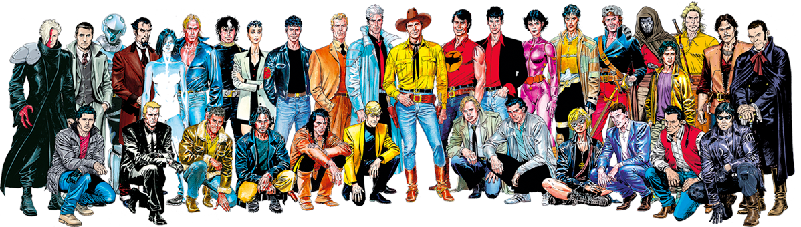
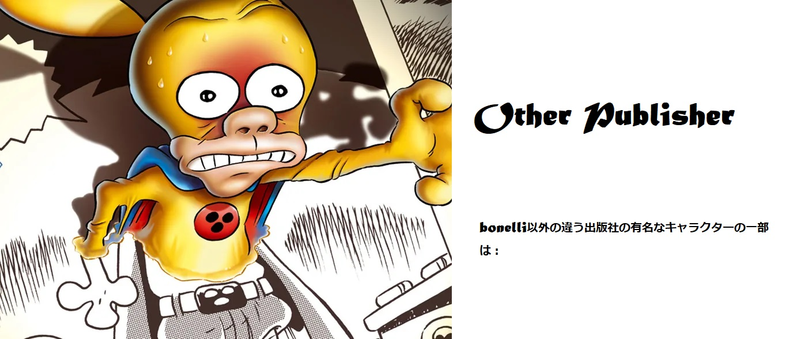
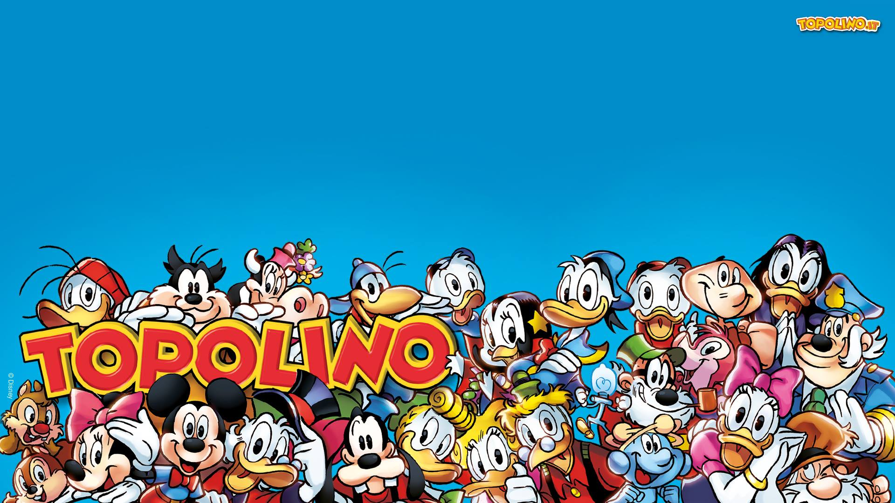

Sergio Bonelli Editore

有名なキャラクター：TEX
Tex（テックス）はイタリアで一番長く続いている漫画シリーズ。1948年から始まり、60年以上、月刊として今もなおイタリア中で販売されています。Tex（テックス）はイタリアで最も知られている漫画の一つと言えます。 主人公、Tex（テックス）は、その発案者、Gian Luisi Bonelli（ジャン ルイージ ボネッリ）自身がモデルとも、また俳優、ゲイリー・クーパーがモデルとも言われています。Gian Luisi Bonelli （ジャン ルイージ ボネッリ）自身、馬を所有しており、さらにピストルのコレクションも持っていた事、そして彼自身の顔を見ればTex（テックス）に生き写しであり、どちらがモデルであったかというのは一目瞭然と言われています。そして主人公Tex（テックス）のキャラクターデザイン設定はTex（テックス）の前にあったOcchio Cupo（オッキオ・クーポ）と言う漫画から取られています。Occhio Cupo（オッキオ・クーポ）の主人公はピッタリとしたジーンズ、フリンジの付いたシャツ、柔らかい革のブーツでした。Tex（テックス）に類似点が見られると思います。
有名なキャラクター：ZAGOR
Sergio Bonelli (セルジョ ボネッリ）こと、Guido Nolitta（グイード・ノリッタ）とGallieno Ferri（ガッリエーノ・フェッリ）発案の漫画。1961年からのヒーロー漫画、Zagor（ザーゴル）。主人公はあのターザンがモデルで、インディアンの超人と設定されています。彼はピストル一丁と、棒の先に石をつけた棍棒のみで様々なモンスターと戦います。 漫画のジャンル、テーマは多岐に渡り、ウェスタン、ファンタジー、サイエンス・フィクションなどです。 Zagor（ザーゴル）は友人Cico（チコ）と800年代アメリカのある想像上の森、Darkwoodに住んでいます。家は砂や家具で囲われた沼地にある小屋です。
有名なキャラクター：DYLAN DOG
Dylan Dogは、Tiziano Sclaviによって作成され、1986年からSergio BonelliEditoreによって発行されたイタリアのホラーコミックシリーズです。 このシリーズは、幽霊、悪魔、吸血鬼、アンデッド、狼男、その他の生き物などの超自然的な要素だけでなく、恐ろしい社会病の犯罪者や連続殺人犯を含む超常現象の捜査官である、その名を冠したキャラクターを特集しています。 それは、シュールレアリスムの静脈と反ブルジョアのレトリックで、以前のホラーの伝統全体に逆らいます。 ディランは主に、この恐ろしいジャンルとディランの陰気な気質にユーモアを加える彼の信頼できる相棒グルーチョ（グルーチョマルクスそっくりさん）によってサポートされています。 シリーズは主に主人公が住んでいるロンドンを舞台にしていますが、彼は時々他の場所を旅行します。

有名なキャラクター：RATMAN
ラットマン（伊: Rat-Man）はレオ・オルトラーニによるイタリアの漫画。1989年から連載開始。 当初はスーパーヒーローのパロディーとして作られた作品だが、徐々に固有のキャラクターを確立した。主人公のラットマンは、自らをスーパーヒーローであると思い込んでいる。実はパワーも知識もないネズミなのだが、やる気と正義感によって難敵を幾度となく打ち負かす。ラットマンは純粋さと正義感を併せ持つヒーローである。この漫画の面白さの特徴は、ナンセンスギャグとパロディーの要素を含んでいる点にある。 アンダーグラウンド漫画として生まれたラットマンは、イタリアで最大の発行部数を誇る日刊紙ラ・レプッブリカの「世界の漫画クラシック」シリーズの一つに選ばれた。 イタリアではパニニ・コミックスから出版されている。 スペインでも翻訳・出版された（2001年〜2004年）。 2006年にはアニメシリーズも制作され、ライ（イタリア放送協会）が放映している
有名なキャラクター：DIABOLIK
Astorina出版社で出版されて、Angela とLuciana Giussani姉妹から作られたキャラクターです。イタリアのコミックの歴史の中で最も人気のあるシリーズの1つであるディアボリックは、1962年に作成され、800を超えるボリュームで構成され、フメッティネリコミックのサブジャンルの誕生につながりました。 このシリーズの名前は、主人公であるアンチヒーローの泥棒にちなんで名付けられました。これは、イタリアやその他の国の以前のパルプフィクションのキャラクターに触発されたものです。 そのストーリーは、毎月の白黒のダイジェストサイズのボリュームで構成されています。 このシリーズは世界中で1億5000万部以上を売り上げ[3]、ヨーロッパで最も有名で最も売れているコミックシリーズの1つになりました。 その成功は、2つの実写映画（それぞれ1968年と2021年に制作された）、ラジオ番組、テレビアニメシリーズ、ビデオゲーム、小説、そして数え切れないほどのパロディーにも影響を与えました。
有名なキャラクター：ZEROCALCARE
ゼロカルカーレの作家デビューには、2001年のジェノヴァ・サミットが大きな影響を与えた。10万人から20万人といわれる人々がサミット反対デモでジェノヴァに集まり、23歳のデモ参加者がカラビニエリに射殺された[注釈 1]。当時17歳でデモに参加していたゼロカルカーレは、 サミットの経験をもとに「法廷に立つ俺たちの物語 (La nostra storia alla sbarra)」（2002年）を発表し、社会運動に参加する漫画家としての活動を始める

有名なキャラクター：TOPOLINO
イタリアはまた、多くのディズニーコミック、つまりディズニーのキャラクターをフィーチャーしたストーリー（ミッキーマウスとドナルドダックの宇宙から）を制作しています。 1960年代以降、カール・バークスやフロイド・ゴットフレッドソンなどのディズニーコミックのアメリカ人アーティストは、過去ほど多くの物語を生み出しませんでした。現在、アメリカでの新作の制作は減少しており（ドン・ローザはヨーロッパで出版）、このニッチは南アメリカ、デンマーク、イタリアの企業によって埋められています。イタリアの「Scuoladisneyana」はいくつかの革新を生み出しました：物語のイタリアの標準的な長さ（30ページ）の構築、「パロディ」の有名な文学作品の再解釈、400ページまでの長い物語の執筆。
有名なキャラクター：PAPERINIK
PaperinikはPK（イタリア、米国のビデオゲーム）としても知られています。DuckAvenger（米国）は漫画本であり、ドナルドダックの分身です。 ドナルドは元々、スクルージ・マクダックやグラッドストーン・ガンダーなどの親戚に密かに復讐を求めるために、ダーク・アベンジャーの代替アイデンティティとしてPaperinikを作成しましたが、すぐにスーパーヒーローとして他の脅威と戦うことになりました。 キャラクターはイタリアの発明であり、彼が登場するストーリーでは支配的ですが、彼を主演していない他のすべての人には非常に欠けています。 イタリアのクリエイター（Elisa Penna、Guido Martina、Giovan Battista Carpi）は、イタリアでトポリーノ＃706-707に掲載された2部構成の60ページのストーリー「Paperinikil diabolico vendicatore」（「Paperinik the diabolical avenger」）でPaperinikを紹介しました。 、1969年6月8日と6月15日。「Paperinik」という名前は、当初、Paperinikの元の描写が類似しているイタリアの漫画本の反英雄Diabolikを指すことを意味していたようです。